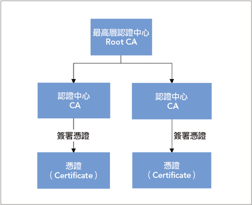

HTTPS (HyperText Transfer Protocol Secure)
HTTP 安全缺陷
用來表示用戶端請求(request)的執行狀況，第一碼數字分別有以下意義：
- 在HTTP協議裏，Web端與Server端進行通訊是使用"明文"的方式，因為HTTP協議本身並不具備加密的功能，所以無法對請求端以及響應端的內容進行加密
- 就算今天Web端可以對內容加密，再傳送到Server端解密，但這樣的機制因為並沒有CA以及公鑰基礎建設的基礎，也沒有透過SSL/TLS來做加密的動作，仍然會有被解密的風險
- HTTP協議不管是web端還是server端都不會對雙方的身份來進行驗證(例如server端收到請求時，只會要求訊息正確，卻不會去驗證這是不是真的是對應到的web端發出來的，而且server只會對請求做出一次響應)，也無法驗證內文的完整性，所以內容很有可能被竊聽或是竄改(也就是你可能不是跟你所想的對象交談
- 風險
- 竊聽風險（eavesdropping）：第三方可以獲知通信內容。
- 篡改風險（tampering） ：第三方可以修改通信內容。
- 冒充風險（pretending）：第三方可以冒充他人身份參與通信。
- Server端因為對request幾乎是有求必應，所以也無法阻止海量Request的DDoS攻擊
HTTPS簡介
全名是：Hyper Text Transfer Protocol over Secure Socket Layer，是 Netscape 在 1994 年創建，簡單來說 HTTPS 就是 HTTP 的加強版，在 HTTP 上增加了
SSL/TLS 的協定，經由HTTP進行通訊，但利用SSL/TLS來加密封包。
HTTPS連接經常用於全球資訊網上的交易支付和企業訊息系統中敏感訊息的傳輸，確保各類型的網頁真實，保護帳戶和保持用戶通信，身分和網路瀏覽的私密性。
HTTPS的主要作用是在不安全的網路上建立一個安全信道，並可在使用適當的加密套件和伺服器憑證可被驗證且可被信任時，對竊聽和中間人攻擊提供合理的防護。
希望達到：
- 所有信息都是加密傳播，第三方無法竊聽
- 具有校驗機制，一旦被篡改，通信雙方會立刻發現
- 配備身份證書，防止身份被冒充
運作原理
SSL主要是運作在應用層與傳輸層間
用對稱加密來加密網頁，用非對稱加密來保護對稱加密的金鑰，這樣互補了兩個演算法的缺點。只要將公鑰放在數位證書中，只要證書是可信的，公鑰就是可信的。因此，SSL/TLS協議的基本過程是這樣的：
- 客戶端向伺服器端要求並驗證非對稱加密算法的公鑰
- 雙方協商生成對稱加密算法的 “對話密鑰”
- 雙方採用對稱加密算法和它的 “對話密鑰” 進行加密通信
對稱加密： 加密和解密使用同一個金鑰的加密演算法。
非對稱加密：需兩個金鑰來進行加密和解密，分別是公鑰 (public key) 和私鑰 (private key)。
HASH：MD5演算法可以將任意長度的資料經由運算之後，得到一組固定長度的結果，可以使用這個結果當作檢查碼 (Checksum)。
連線步驟
- SSL Client端發出ClientHello給SSL伺服器端。告知伺服器端本身可實現的算法列表和其他一些需要的資訊。
- SSL的服務器端在接收ClientHello後會回應一個ServerHello，裡面確定了這次通訊所需要的演算法，並送出伺服器本身的憑證（資訊內包含身分及公鑰）。
- SSL Client會新增一個秘密金鑰，並利用伺服器傳來的公鑰來加密，而且會回傳加密後的秘密金鑰密文給伺服器。
- 伺服器使用自己的私鑰解開秘密金鑰密文，取得秘密金鑰後，即利用此秘密金鑰來相互通訊。

SSL憑證都是發給公司或是法人，典型的 SSL 憑證將包括網域名稱(domain name)、公司名稱(company
name)、住址(address)、所在城市(city)、國家(country)，
它也包含了憑證的到期日和負責核發此憑證的發證中心詳細資料。
當一個瀏覽器連結到一個安全網站時，它將收到這個網站的SSL憑證並且檢驗它是否過期、它是否是已經被瀏覽器信任的發證中心所核發的，以及它是否如核發時
所登記的內容被該網站使用，假如有任何一項檢查不通過，瀏覽器將顯示一個警告訊息給使用者。